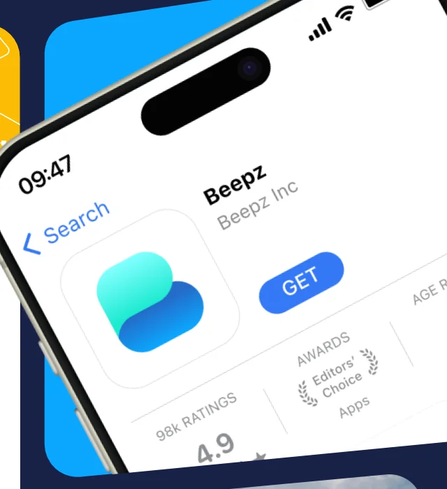
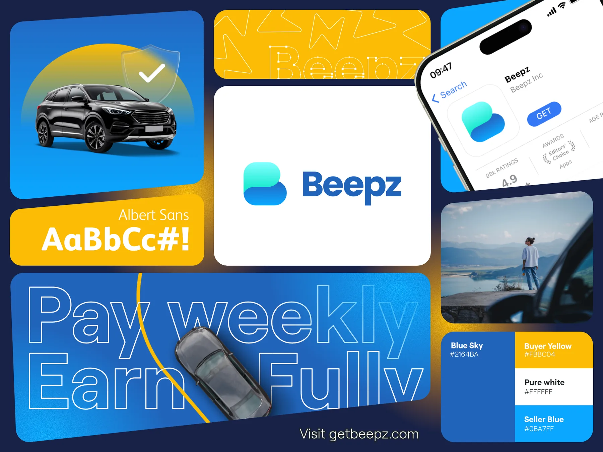

Fiche de course
Beepz
Beepz permet d’acheter et de vendre une voiture sans vérification de crédit. Trois mois pour unifier son identité sur l’ensemble de ses supports : design système, landing page, emails.

- Année
- 2025
- Rôle
- UI/UX Designer
- Durée
- 3 mois
- Livrables
- Design système·Landing page·Emails
L’approche
Ce qu’il y avait en arrivant
Beepz est une place de marché automobile née en Californie. Sa promesse : acheter une voiture sans vérification de crédit, via des frais d’activation uniques puis des paiements hebdomadaires. Un modèle qui s’adresse à ceux qu’un score écarte du financement classique.
La société revendique plus de 100 000 téléchargements, 19 000 utilisateurs actifs et 4 000 voitures vendues, et prépare son expansion hors de Californie. Une croissance rapide, qui exige des fondations réutilisables.
À mon arrivée, aucune ligne directrice n’existait. Chaque intervenant designait selon ses propres repères, et l’ADN de la marque se diluait à chaque nouvel écran : le site ne correspondait pas à l’application, les emails à aucun des deux.
Le fil rouge
Trois livrables, un seul système. La landing page et les emails ne sont pas deux chantiers parallèles : ce sont les deux terrains sur lesquels le socle a été appliqué, éprouvé, puis corrigé.
-
01
Le design système
Le socle
L’enjeu Formaliser l’ADN de la marque, pour qu’aucun intervenant n’ait plus à le deviner.
J’ai repris la palette existante plutôt que de la remplacer : intentions conservées, rapports assainis. Surtout, chaque couleur porte désormais le nom de son usage — Buyer Yellow, Seller Blue. Les deux faces de la place de marché ont chacune la leur, et le choix cesse d’être une question de goût.
Albert Sans porte l’ensemble : une famille unique, lisible par les deux publics de la plateforme — les professionnels d’un côté, vendeurs et gestionnaires de flottes ; les particuliers de l’autre. Sérieuse sans être distante, elle tient du titre d’accroche à la mention légale.
Le système est livré sous deux formes : un fichier Figma qui rassemble l’ensemble des guidelines, support de travail de l’équipe ; et un PDF autonome que Beepz transmet à ses partenaires lors d’une collaboration.
- Blue Sky #2164BA
- Seller Blue #0BA7FF
- Buyer Yellow #FBBC04
- Pure white #FFFFFF

La planche du système : logo, palette nommée par usage, Albert Sans, et la direction photographique. -
Nommage
Une couleur porte le nom de son destinataire, pas celui de sa teinte.
-
Typographie
Albert Sans, famille unique. Une seule voix pour deux publics.
-
Diffusion
Un Figma pour l’équipe, un PDF pour les partenaires. Deux usages, deux formats.
-
02
La landing page
La vitrine
L’enjeu Remplacer une page montée pour réserver le nom de domaine par une page qui dise enfin ce que Beepz a de particulier.
Hérité du socle Grille Échelle typo Boutons Couleurs
La page en place n’avait jamais été pensée comme une page : un template générique, monté pour que le nom de domaine ne reste pas vide. Rien n’y mettait en avant ce qui distingue Beepz. Il n’y avait donc pas de refonte à faire au sens strict — il fallait écrire la page.
À compléter Ce que tu as construit à la place : l’ordre des sections retenu, ce que tu as choisi de montrer en premier, et pourquoi cet ordre-là.
À compléter Le moment où le socle a servi — ou résisté : les composants qu’il a fallu créer ou revoir pour que la page tienne.
Visuel à venir — avantVisuel à venir — aprèsÀ compléter Avant / après, et ce qu’il faut regarder. -
Structure
À compléter La décision, en une phrase.
-
Responsive
À compléter La décision, en une phrase.
-
Intégration
À compléter La décision, en une phrase.
-
-
03
Les emails
La relance
L’enjeu À compléter Une ligne : pourquoi les emails comptaient autant que le site.
Hérité du socle Échelle typo Boutons Couleurs Ton
À compléter Le vrai sujet de l’email : faire tenir le système dans un support qui n’en veut pas — tableaux, clients qui ignorent la moitié du CSS, largeur contrainte. Raconte l’écart, c’est là que le savoir-faire se voit.
À compléter Ce que tu as livré : le nombre de gabarits, comment ils se composent, et qui les envoie ensuite.
Visuel à venir — les gabarits d’emailÀ compléter Ce que le visuel montre, en une ligne. -
Contraintes
À compléter La décision, en une phrase.
-
Gabarits
À compléter La décision, en une phrase.
-
Tests
À compléter La décision, en une phrase.
-
Au sommet
Ce que ça a changé
-
Pour l’équipe
À compléter Ce qu’elle fait maintenant sans toi.
-
Pour la marque
À compléter Ce qui se tient enfin d’un support à l’autre.
-
Pour la suite
À compléter Ce que le socle a rendu possible ensuite.
À compléter Le mot de la fin : ce que la mission a laissé derrière elle, en deux ou trois phrases.
À compléter Et ce que tu ferais autrement. C’est la ligne que les recruteurs lisent en entier — un regard critique sur son propre travail vaut mieux qu’un chiffre flatteur.